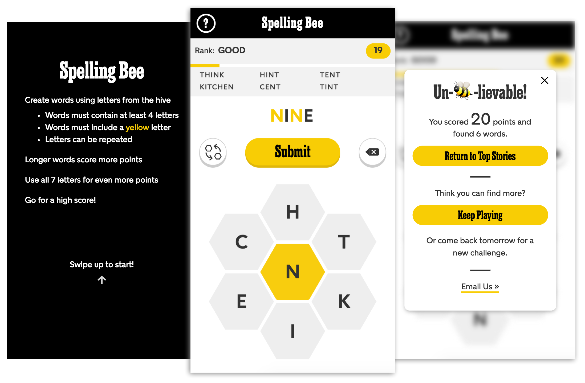

> Spelling Bee
The NYT Games Expansion Team is currently exploring new audiences and opportunities by rapidly prototyping and user testing game concepts.
As part of that effort, I recently spent two weeks designing and developing a prototype of Spelling Bee that was tested on the mobile web homepage of The New York Times.
Background
Spelling Bee is one of the variety puzzles found in The New York Times Magazine. Notoriously difficult, it's usually played over multiple sessions - a lot of players we interviewed described their routine of leaving the magazine out on their coffee table so that they could come back to it throughout the day.
Our challenge was to see if we could recreate this analog experience in a digital game.
Process
When it comes to process, the Expansion team values speed above all else - we aim to validate or discard ideas as quickly as possible by building MVPs and testing them within a 2-week timeframe.
After an initial kickoff meeting with our game designer and product manager, I designed and coded a prototype in three days and did a round of internal user testing to answer some gameplay questions.

The feedback from the user testing was pretty unanimous - the game, an exact interpretation of the original rules of Spelling Bee, was too difficult.
Taking that feedback into account, we made the rules and scoring a little less rigid and I built a second iteration of the prototype.
User Testing
Once the second iteration was complete, we ran a 2-week A/B test of Spelling Bee on the mobile web homepage of nytimes.com that was an overall success. Excitingly enough, we found that a significant number of players were coming back to the prototype multiple times a day and our test group showed signs of habituation by the end of the test.
We're currently figuring out next steps for our beloved Bee, but for now, please enjoy some of my personal favorite feedback emails:
I love the spelling bee game! My best friend and I play every night and text each other our scores through the evening and then compare our word lists. It's really great fun. Please keep it around.
Very fun! I got my 94 year old dad into it. He's a New York Times cross world puzzler from way back!
I am completely hooked on this game!! My fiance and i are long distance for the summer and sending our spelling bee answers to one another quickly became a very loving ritual for us! We can't wait until the game is back!! Thanks!
> Design Sprint: Daily Flow
This is a placeholder lalala